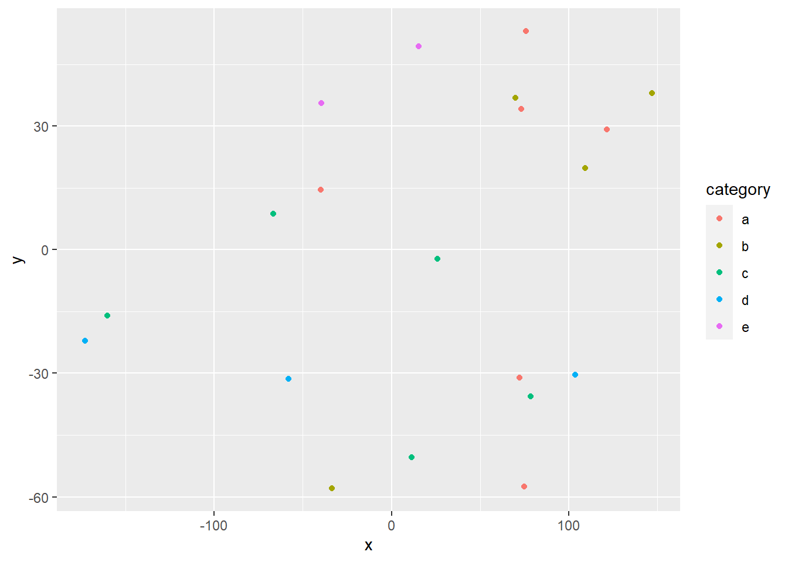

Wildfires in California occur regularly, these have significantly contributed in shaping the nature over the past century. Southern California is the highest fire prone regions of the world, its predominant forests have evolved to thrive on the phenomenon of wildfires. Over the past decades the fires have caused significant damage and loss of both property, human and animal life. As a result of these wildfires, a number of pollutants such as, oxides of nitrogen, oxides of sulfur, methane, carbon monoxide are released into the atmosphere. This project deals with statistical comparison between the satellite data (NASA-TROPOMI), and a geographical model data (GEOS-CF) with respect to NO2 and CO concentrations emitted from California wildfires.
The TROPOspheric Monitoring Instrument (TROPOMI) is a satellite instrument which is on board the Copernicus Sentinel-5 Precursor satellite. The Sentinel-5 Precursor (S5P) is launched by the European Space Agency (ESA). The tropospheric monitoring instrument covers the wavelength of ultraviolet-visible (270 nm to 495 nm), near infrared region (675 nm to 775 nm) and shortwave infrared (2305 nm - 2385 nm).This instrument provides measurements on concentrations of various pollutants and components of atmosphere like ozone, NO2 , SO2, CH4 , CO, formaldehyde, aerosols and clouds.
The GEOS-Chem is a global 3-D model which is used for monitoring atmospheric chemistry, it is driven by assimilated meteorological observations from the Goddard Earth Observing System (GEOS).This model takes into account about 220 reactive species and 720 reactions. GEOS-CF works by taking into account atmospheric dynamics such as wind speed and chemistry of pollutants (such as their chemical reactions, dispersion, reactivity) in predicting their concentrations.
So, since satellite captures real time data and model predicts data based on factors, the goal of this project is to analyze how accurate the model data is to satellite data.
The NASA-TROPOMI satellite data for analyzing NO2 concentration is obtained from GES-DISC Website. After accessing the website, I have specified the latitude, longitude boundaries, parameters that I wish to sample (quality index, surface pressure.. etc) and the time period in which we want to obtain the data. Once this is done,files were downloaded in .txt format. These files have been further converted to .mat files using a python script. The .mat files generated from the python script were further used in R for analysis.
The NASA-TROPOMI satellite data for analyzing CO concentration is obtained from GES-DISC Website. After accessing the website,I have performed the same procedure as conducted with the NO2 data.
The GEOS-CF model data for both NO2 and CO is obtained from GEOS-CF Website. After accessing the website I chose the day on which I wanted to obtain the data. The daat are in the form of .h5 files. By default GEOS-CF data is provided at latitude and longitude ranges of -90 to 90 and -180 to 180 respectively.
MODIS data for analyzing wildfires is obtained form MODIS Website and from the World View Website. After accessing the website, I have specified the latitude and longitude boundaries, type of satellite, and file formats. I chose the file format to csv.I further used this csv file for analysis in R.
The .mat files read in R were further filtered based on quality index. Once this is done, the data is converted to ordinary datetime format from matlab datetime format using the “lubridate” package and ymd() function. This makes the data into a readable format.
The MODIS fire data are in the form of csv files, once these files are read into R, they are in the form of data frames, the number of times a brightness value occurs in a day is taken as a fire count for that day. Number of fire counts on each day are obtained. Based on these fire counts I have filtered the study dates and would be further focusing on them.
GEOS-CF model data are in the form of .h5 files, the data in these files is in the form of a meshgrid/ matrix. Longitude and Latitude values are distributed in the form of a grid, and each point in the grid (longitude,latitude) pair has a concentration value. GEOS-CF model data on specific dates is chosen based on the MODIS data, the days on which MODIS fire counts were found to be significant were taken into consideration.
Data for TROPOMI CO and NO~2 are represented in the from of maps with longitudes varying on x-axis and latitudes varying on y-axis. GEOS-CF model data is also represented in the same way.
The following packages were used in the project:
library(pracma)library(dplyr)
library(R.matlab)
library(lubridate)
library(ncdf4)
library(ggplot2)
library(devtools)
library(Bilinear)
library(interp) library(R.matlab)
library(tidyverse)
library(leaflet)
library(kableExtra)
knitr::opts_chunk$set(cache=TRUE) modis_data <- read.csv('C:\\Users\\shrut\\Desktop\\SDS Project\\fire_archive_M6_164945.csv')modis_data_lat_filter <- modis_data[modis_data$latitude > 30.4 & modis_data$latitude < 37.3 ,]
modis_data_lon_filter <- modis_data_lat_filter[modis_data_lat_filter$longitude > -124 & modis_data_lat_filter$longitude < -111.8 ,]
dates <- c(modis_data_lon_filter['acq_date'])
count_table <- as.data.frame(table(dates))
counts_table_order <- count_table[order(-count_table$Freq),]From the above code we can have a clear view about the dates where fire was significant, the table counts_table shows the frequency of fire counts on each day.
setwd('C:\\Users\\shrut\\Downloads')
geos_no2_data <- nc_open('GEOS-CF.v01.rpl.xgc_tavg_1hr_g1440x721_x1.20180808_0530z.nc4')The dates on which fire was found to be significant in the year 2018 were chosen in the study. Hence, the date ‘2018-08-08’ is chosen and used as a filter in the above code.
n=20
data=data.frame(x=runif(n,-180,180),
y=runif(n,-60,60),
size = runif(n, 5, 20),
category = factor(
sample(letters[1:5], n, replace = TRUE)
),
value = rnorm(n))data %>%
slice(1:10) %>% #show only 1:n rows
kable(digits=2,align="c")%>% #make table and round to two digits
kable_styling(bootstrap_options =
c("striped", "hover", "condensed", "responsive")) #apply other formatting| x | y | size | category | value |
|---|---|---|---|---|
| 69.79 | 36.89 | 13.16 | b | -0.84 |
| 72.21 | -31.11 | 13.27 | a | 1.04 |
| 146.95 | 37.95 | 7.31 | b | -0.33 |
| -39.86 | 14.55 | 6.09 | a | -0.66 |
| 78.52 | -35.63 | 11.02 | c | -0.88 |
| -160.12 | -15.96 | 8.26 | c | 0.81 |
| -39.50 | 35.57 | 13.83 | e | 0.60 |
| 26.05 | -2.16 | 18.85 | c | -0.75 |
| -66.78 | 8.75 | 9.38 | c | -1.61 |
| 121.38 | 29.20 | 12.89 | a | -3.87 |
Add any additional processing steps here.
[~200 words]
Tables and figures (maps and other graphics) are carefully planned to convey the results of your analysis. Intense exploration and evidence of many trials and failures. The author looked at the data in many different ways before coming to the final presentation of the data.
Show tables, plots, etc. and describe them.
m <- leaflet(data) %>%
addTiles() %>%
addCircleMarkers(~x, ~y, radius = ~size,color = ~as.factor(category)) %>%
addPopups(~x[2], ~y[2], "Random popup")
m # a map with the default OSM tile layerMap of completely random data
data %>%
ggplot(aes(x=x,y=y,col=category))+
geom_point()
[~200 words]
Clear summary adequately describing the results and putting them in context. Discussion of further questions and ways to continue investigation.
All sources are cited in a consistent manner